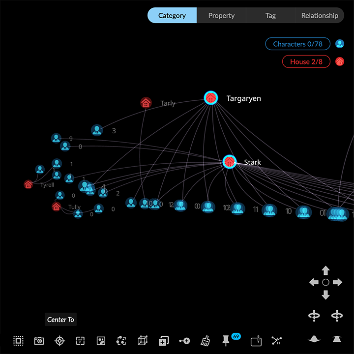
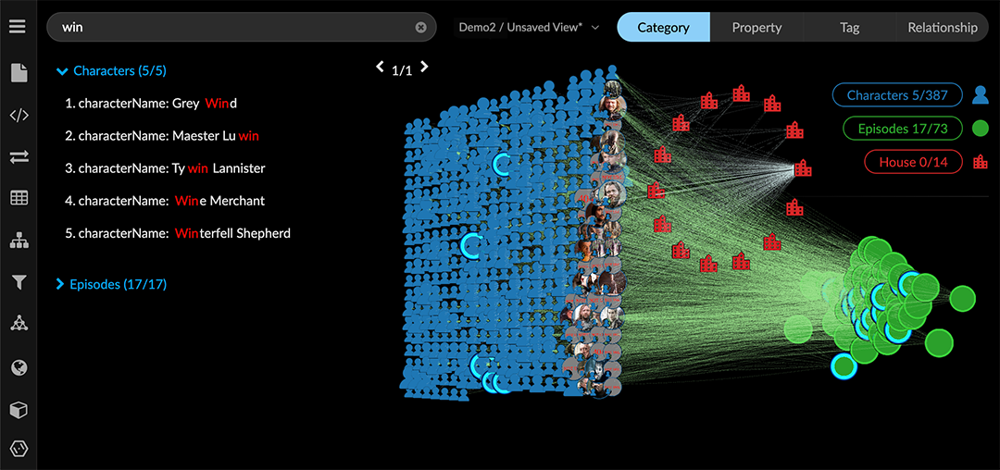
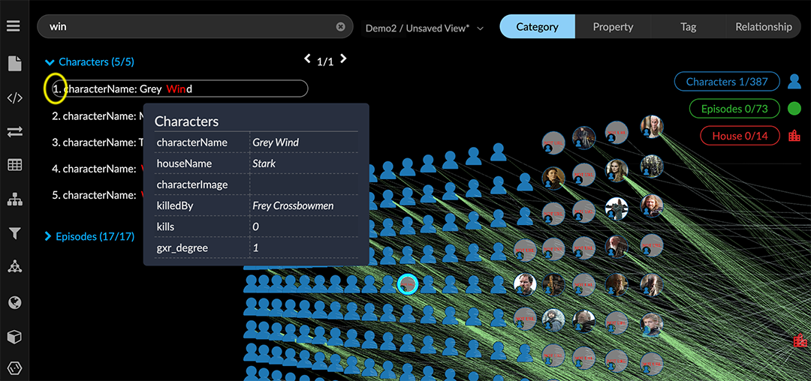
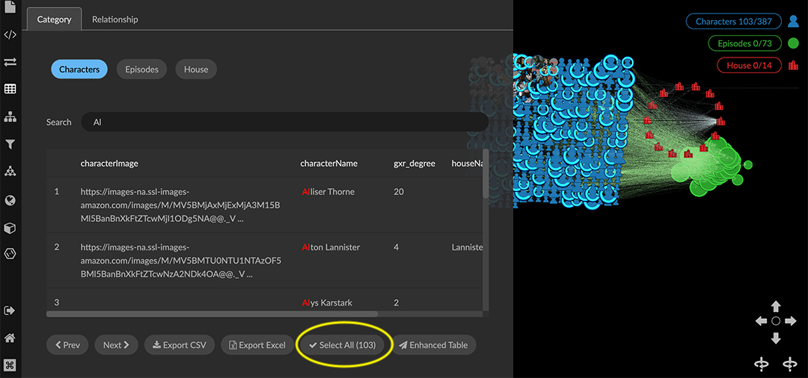

Navigating the Graph Mouse and/or keyboard Navigation Shortcuts let you manually pan, rotate, zoom in and out, and move all data in the project space. You can also use the mouse to operate GraphXR’s GUI navigation controls. Navigation controls operate on all the data. However, rotation and zoom functions center on selected nodes, if any. Additional navigation options include: Center To and Fly Out on the toolbar or right-click menu to reposition your view of the graph. Full-text keyword search on property values to search and center the graph on matching nodes. Opening a Table to search for and center on one or more nodes or edges and optionally select them. In a project, click the Shortcut icon located at the lower left of the browser window for a quick reference to navigation and selection hotkeys. Navigating with Fly Out and Center To The Fly Out and Center To icons on the context toolbar or right-click menu reposition your view of the graph. Click or select Fly Out to display all the graph data centered in your browser window. Or, click the Reset circle in the GUI navigation controls. Click or select Center To to zoom in to a view of the data centered on a selected node or nodes.  Navigating using a keyword search The search bar at the top left provides full-text keyword search on properties of nodes in the graph. Nodes with matching property values are highlighted as you enter search terms. You can then click items on the list to select and center the graph on a node. A graph search lets you locate and navigate to data already in the graph. You can also search a connected Neo4j database to import nodes with specific property values. If your project is connected to a database, an icon to the right of the search bar toggles between Search From Graph and Search From Database. To navigate using keyword search of property values: Enter a full or partial search term. For example, to find a Character node with the name property value of Grey Wind, you can simply enter “win”.  As you enter the term, nodes with property values matching the search term are selected. A list by category and node of results appears below the search bar. The example search returned two Character nodes, one of which has the name property value we want. In a graph search partial text is entered without asterisks. Any space between search terms is recognized as OR logic. AND logic is not recognized. Mouse over a list item to see an information window. This can help you choose the one you want. Click anywhere on an item to select the node and center it in the project space.  Click the X in the search bar to clear a search. Navigating using a Table From a table of the data for any category or relationship, you can navigate to a node or edge by clicking a table row. The Table panel’s Search bar lets you display only the table entries that match specified property values, and to select the resulting data in the graph. To navigate to a node or edge from a table: Select data in the graph using any method, or double-click in an empty area to de-select all data. All data appears on a table when nothing is selected; otherwise only selected data appears. Click Table in the Main Menu. In the Table panel’s Category tab, click a category to display a table of its nodes in the graph. OR In the Table panel’s Relationship tab, click a relationship to display a table of its edges in the graph. Click the table row of a single node (or edge) of interest. The graph centers on the node (or edge). Select it with left mouse click, and notice that the table now only displays that one row. In a large table, you can use Search to locate and focus on smaller amounts of data. Enter a search term in the Search field. Properties are in alphabetical order by property name, so you may need to use the horizontal scroll bar to see all the property values returned by the search. Click Select All to select all the data that match your search.  Now you can click the table row of a single node (or edge) to center the graph on each selected node (or edge) in the table.